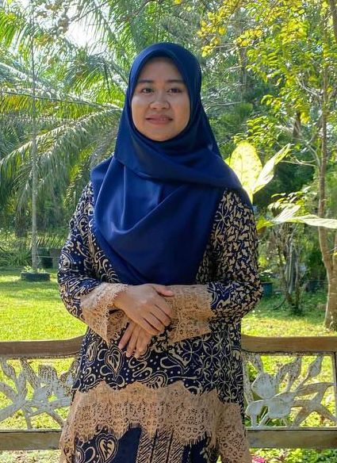

A Glimpse of My Family
I am the youngest of four siblings, consisting of one brother and three sisters. My mother is a dedicated teacher, while my father passed away 11 years ago. My eldest brother is married and blessed with two children, Zarif and Arash, who bring joy to our family. My first sister is also married and building her own family life, while my second sister is still single and serves as a teacher, following in our mother’s footsteps. As the youngest child, I am grateful to have been raised in a home filled with love, support, and mutual care. These values have shaped me into a compassionate, independent, and family-oriented person. Growing up in a house full of different personalities has taught me to understand, respect, and appreciate others, and although my family is not perfect, our laughter, memories, and small moments together are what make our bond truly special.
Below are a few details about my family and our photo:
Let's see my family portrait: Jump to family portrait
 |
My Father 🤴 Name: Ahmad Nasir Bin Othman Date of Birth: 10th September 1964 Birth Order:Third child Passed away on: 15th July 2014 |
My Mother 👸 Name: Mazidah Binti Md Noor Date of Birth: 04th May 1969 Birth Order: Twelfth child Occupation: Teacher |
|
| My Brother 👨 Name: Ahmad Ashraf Bin Ahmad Nasir Date of Birth: 3rd July 1963 Birth Order:First child Occupation:Self-employed |
My Sister-in-law 👩 Name: Nor Azimah Binti Yassin Date of Birth: 20th August 1995 Birth Order: youngest child Occupation: Housewife |
||
|  | My Sister 👩 Name: Farah Husna Binti Ahmad Nasir Date of Birth: 06th September 1994 Birth Order:Second child Occupation: Executive Information Technology | My Brother-in-law 👨 Name: Muhammad Aidil Bin Amis Date of Birth: 15th March 1994 Birth Order: Second child Occupation: Perodua Sales advisor |
|
| My Sister 👩 Name: Farah Hanis Binti Ahmad Nasir Date of Birth: 29th October 1999 Birth Order:Third child Occupation: Teacher |
 |
Myself 👧 Name: Farah Hanim Binti Ahmad Nasir Date of Birth: 10th October 2005 Birth Order: Youngest child Status: Student |
|
 |
My Nephew 👦 Name: Ahmad Zariff Aydan Bin Ahmad Ashraf Date of Birth: 21st May 2019 Birth Order:First child Age: 6 Years Old |
My Nephew 👦 Name: Muhammad Aarash Zafriel Birth Order: Second child Age: 2 months |
My Family Portrait💕